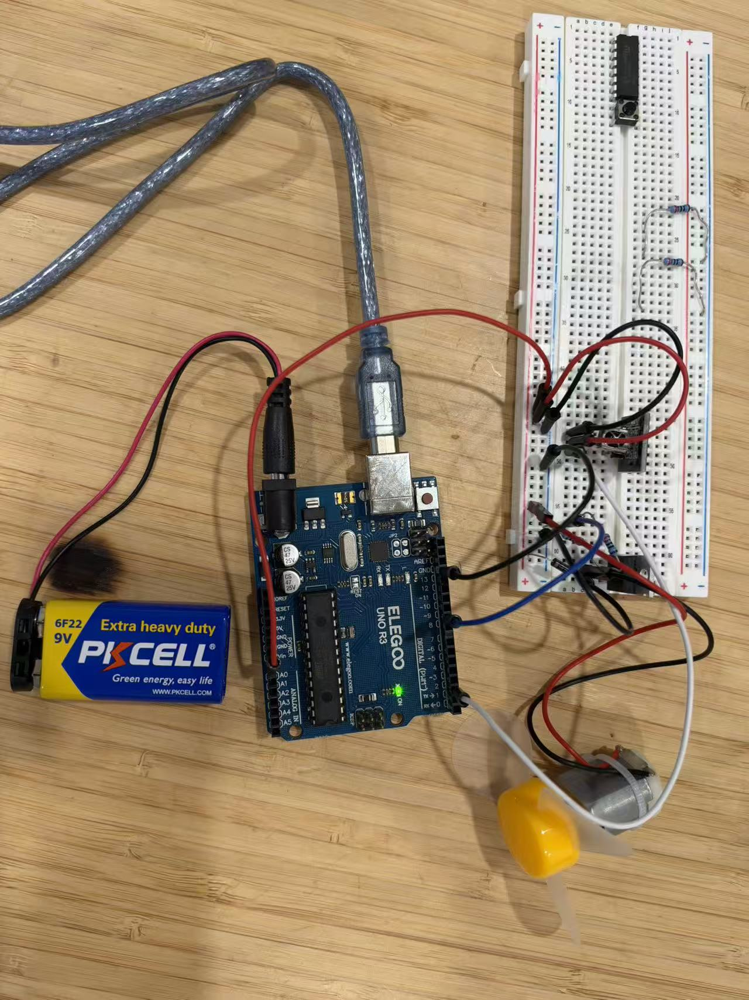
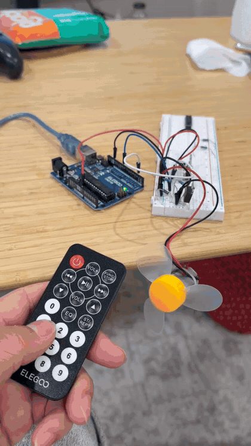
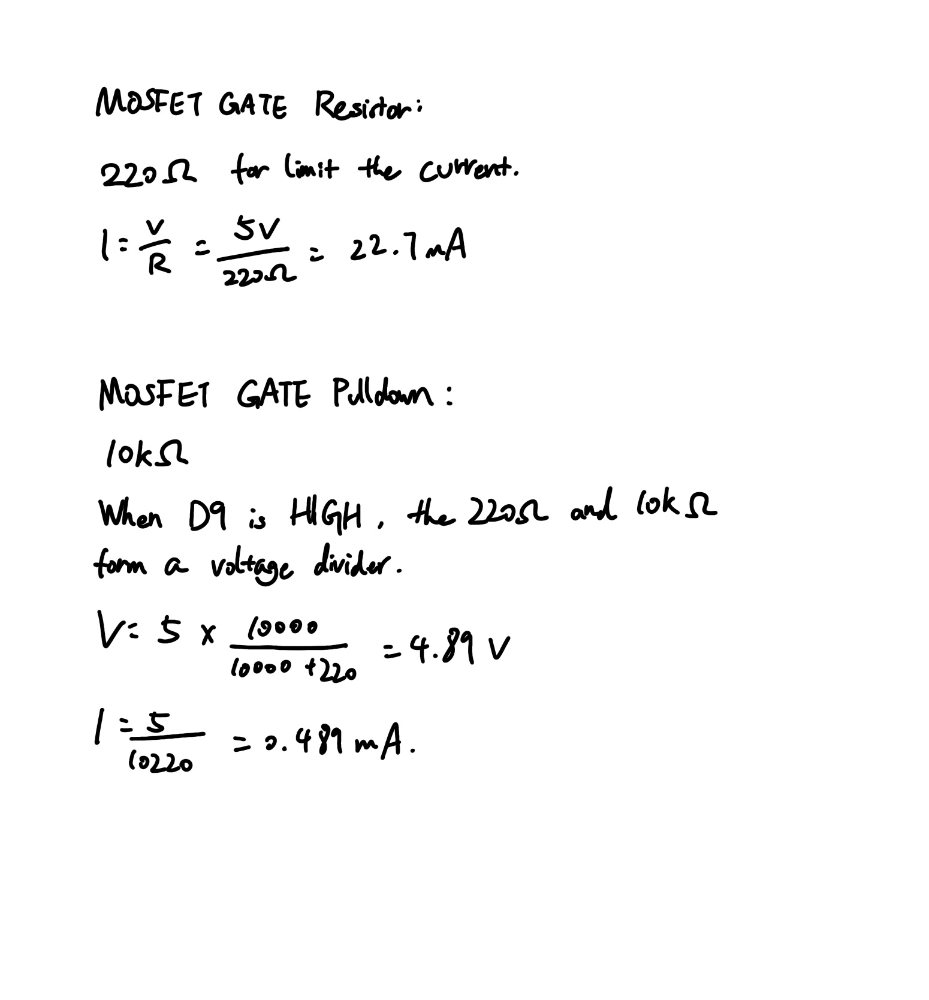
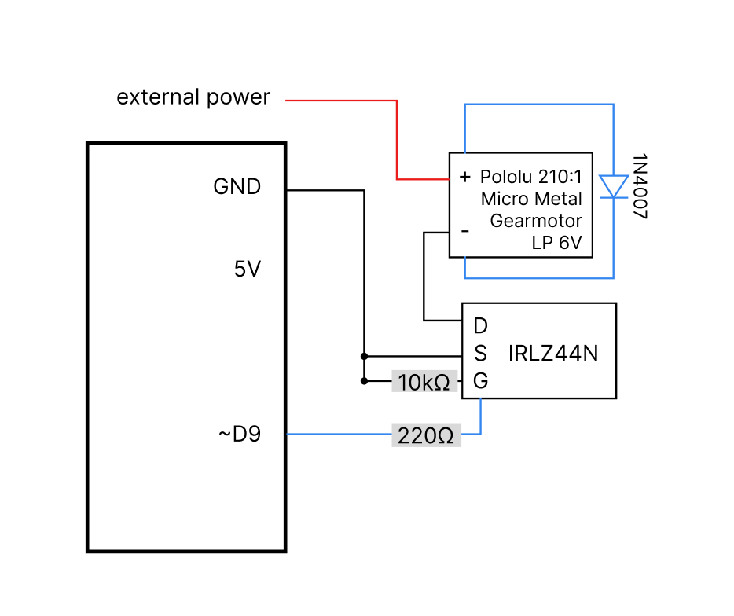
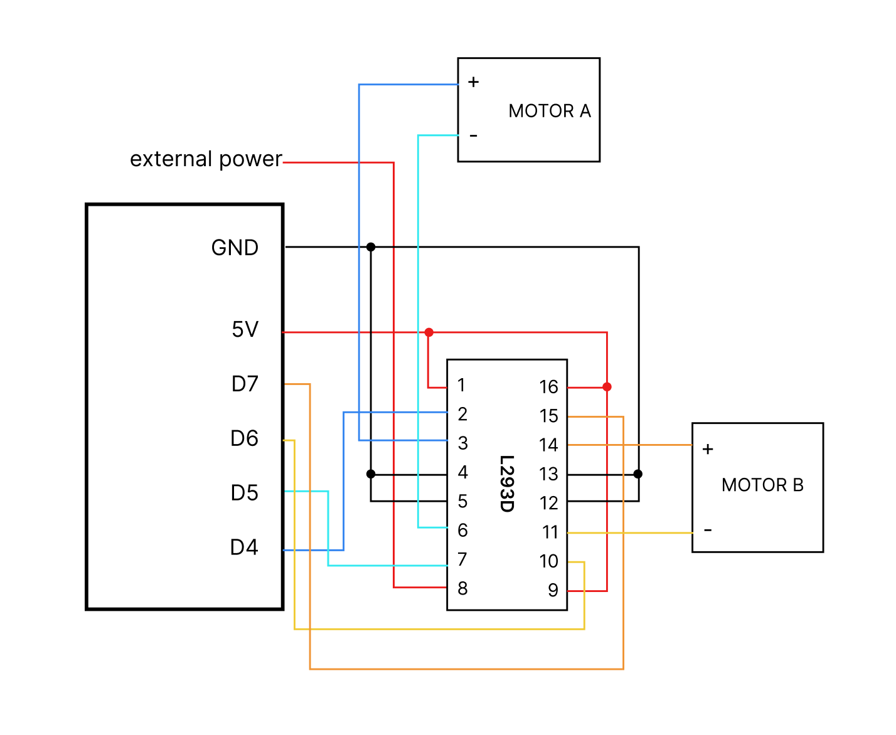

This project uses an infrared remote control and receiver as the input, and an N-channel IRLZ44N MOSFET to switch a DC motor powered by an external supply. The Arduino reads remote-control signals with the IRremote library, and analogWrite() sets the motor output to fully ON or OFF.

//Include infrared remote library.
#include <IRremote.hpp>
//Set the IR receiver signal pin.
const int irPin = 2;
//Set the MOSFET control pin.
const int motorPin = 9;
//Store whether the motor is on or off.
bool motorOn = false;
void setup() {
// Open the Serial Monitor connection at 9600 baud.
Serial.begin(9600);
//Set the motor control pin.
pinMode(motorPin, OUTPUT);
//motor off when the program starts.
analogWrite(motorPin, 0);
// Start the infrared receiver.
IrReceiver.begin(irPin, DISABLE_LED_FEEDBACK);
}
void loop() {
//Check if the IR receiver has received a signal.
if (IrReceiver.decode()) {
//Accept IR signal.
if (IrReceiver.decodedIRData.protocol != UNKNOWN &&
!(IrReceiver.decodedIRData.flags & IRDATA_FLAGS_IS_REPEAT) &&
!(IrReceiver.decodedIRData.flags & IRDATA_FLAGS_IS_AUTO_REPEAT)) {
//Change the motor state.
motorOn = !motorOn;
//Check if the motor should be on.
if (motorOn) {
// Turn the motor on at full PWM.
analogWrite(motorPin, 255);
// Print the motor status.
Serial.println("Motor ON");
} else {
// Turn the motor off.
analogWrite(motorPin, 0);
// Print the motor status.
Serial.println("Motor OFF");
}
}
//Prepare to receive the next IR signal.
IrReceiver.resume();
}
}| Part / value | Function |
|---|---|
| D2 | Receives decoded IR remote-control input through the IR receiver. |
| D9 | Drives the IRLZ44N Gate through a 220 Ω resistor. |
pinMode(motorPin, OUTPUT) | Configures D9 as an output. Immediately afterward, analogWrite(motorPin, 0) requests a LOW output so the motor starts OFF. Before initialization, the pull-down resistor is intended to prevent a floating Gate. |
| 220 Ω | Limits brief current while charging or discharging the MOSFET Gate. |
| 10 kΩ | Pulls the MOSFET Gate toward GND while D9 is not actively driving it. |
analogWrite(9, 0) / analogWrite(9, 255) | 0 = fully OFF; 255 = fully ON (not intermediate-speed control). |
| 9600 | Serial communication speed in baud. |
| Flyback diode | Connected across the motor with its striped cathode toward motor supply positive, to reduce inductive turn-off voltage spikes. |
| External supply | Supplies motor current. Its negative terminal must share GND with the Arduino; voltage must match the motor rating. |


My transistor is the IRLZ44N. Pin 2 is Drain and Pin 3 is Source. According to the datasheet, the absolute maximum continuous drain current is 47 A at atemperature of 25°C; it is 33 A at a 100°C temperature. The specified maximum pulsed drain current is 160 A. .


An L293D uses a 5 V logic supply on pin 16, a separate motor supply on pin 8, common ground on pins 4, 5, 12, and 13, and HIGH enable inputs on pins 1 and 9. Motor A is connected between outputs 3 and 6, while Motor B is connected between outputs 11 and 14. In this example, D4/D5 control Motor A's direction and D6/D7 control Motor B's direction.
// Configure the four motor-direction inputs as outputs.
set D4, D5, D6, D7 to OUTPUT
// Run both motors forward.
set D4=HIGH, D5=LOW, D6=HIGH, D7=LOW
wait 2 seconds
// Run both motors backward.
set D4=LOW, D5=HIGH, D6=LOW, D7=HIGH
wait 2 seconds
// Run Motor A forward and Motor B backward.
set D4=HIGH, D5=LOW, D6=LOW, D7=HIGH
wait 2 seconds
// Run Motor A backward and Motor B forward.
set D4=LOW, D5=HIGH, D6=HIGH, D7=LOW
wait 2 secondsUsed ChatGPT for HTML file documentation